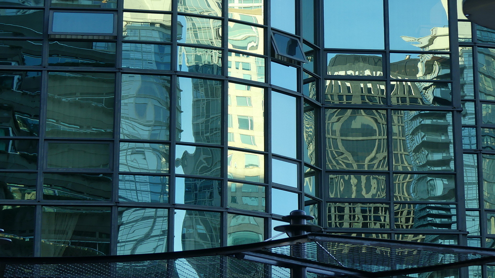

02 — Reflection vs Transmission
One of the first concepts that changed how I looked at glass was the STAR model: scattered, transmitted, absorbed, and reflected light together account for nearly all optical behavior. Even "clear" glass reflects part of the environment while transmitting the rest. Looking through glass always means looking at two images simultaneously: the world beyond the surface and the reflected world in front of it.
Image credit: SketchUp Forums, Window pane reflection distortion. Source